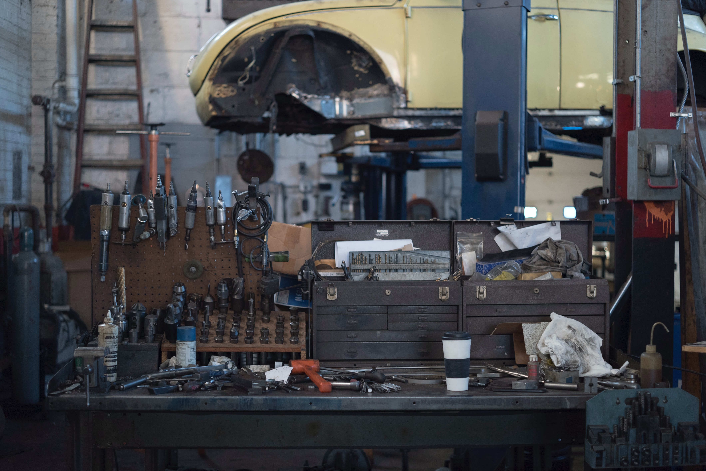
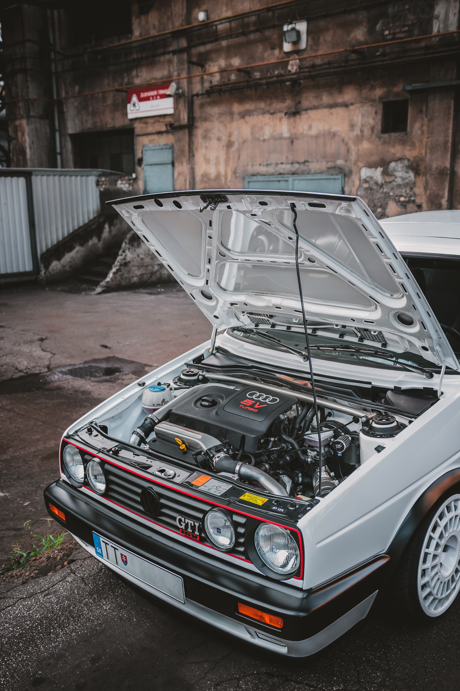

car-reader 차계부
1. 연비 추이 파악

연비는 자동차가 1L로 몇 km의 거리를 가는지 알려주며, 운전자가 얼마나 경제적, 친환경적으로 운전하는지 표시해주는 대표적인 지표입니다.
내 차 유지비 중 큰 부분을 차지하는 유류비와도 직결되는 것이 바로 연비인데요. 그런데 연비는 내 차의 상태 역시 나타내 주는 지표라는 사실!
하지만 기온과 운전습관 등에 큰 변화가 없는데 연비가 갑자기 큰 폭으로 떨어진다면? 이는 엔진 누유나 변속기/타이어 등 자동차에 문제가 생겼을 가능성이 높습니다.
차계부를 작성하면 평소의 내 차 연비를 파악할 수 있어, 자동차에 이상 징후가 생겼을 경우 신속하게 대처할 수 있다는 장점이 있습니다.
2. 유지비 절감 (이중/과잉정비 방지)
예를 들어 기록이 없다면 엔진오일을 교체한지 얼마 안 되어 또 교체한다든지, 똑같은 타이어를 같은 정비소에서 더 비싸게 교체해도 확인할 길이 없는 상황을 겪게 될 수 있겠죠.
따라서 차계부를 작성하는 것은 이중 정비, 과잉정비를 막아 유지비 절감에 큰 도움이 됩니다. 실제로 차계부 작성 시 불필요한 지출이 줄어 약 20% 정도의 유지비 절감이 가능하다고 하니,
차가 있다면 당장 차계부 기록을 시작해야겠죠?
3. 주요 소모품 주기 파악
자동차의 주요 부품과 소모품들은 그들만의 점검 및 교체주기가 있으며, 차계부를 통해 그 주기가 도래했는지 알 수 있습니다. 점검이 제때 이루어지지 않아 막대한 수리 비용을 물거나,
큰 사고로 연결되지 않기 위해서는 꼼꼼한 기록이 필수겠죠?